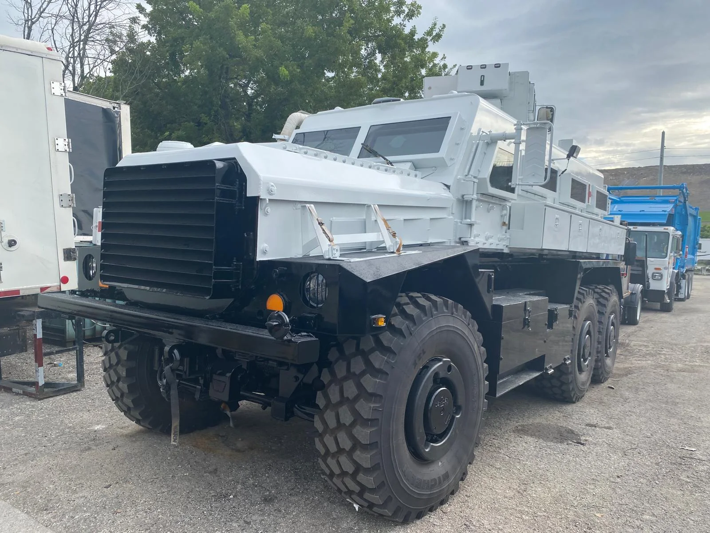
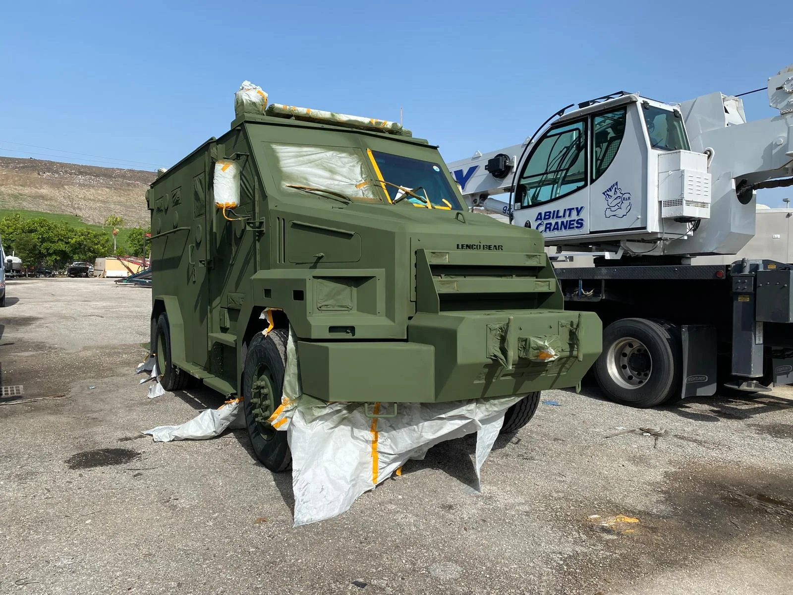
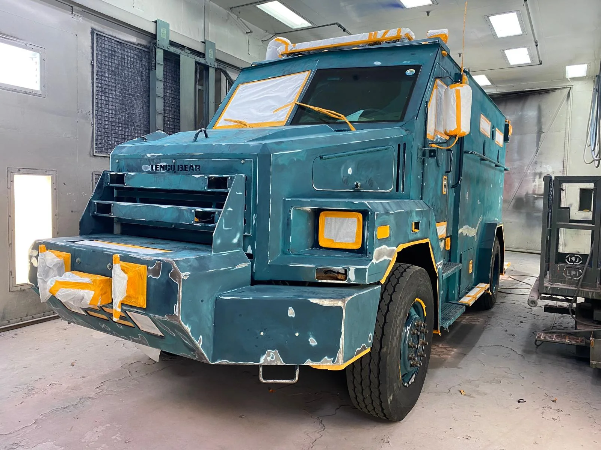

A focused launch for A1 Truck & RV Center: new B2B presence, fleet-focused outreach, measurable pipeline and a complete operating system ready to continue after Day 5.
At the end of five days, A1 Truck & RV Center will have a separate commercial/fleet digital presence connected to the A1 corporate identity, a B2B landing experience, new social profiles, a target-account pipeline, outbound messaging, tracking and a repeatable campaign that can continue operating.
A1 Truck & RV Center becomes a clear commercial/fleet unit, while still pointing back to the main A1 brand and domain.
Fleet managers, operations leaders and business owners are contacted through email, phone and LinkedIn - not just passive posts.
Every account, contact, reply, meeting and repair opportunity is tracked so management sees activity and results.
These are execution targets and expected early-stage ranges, not guaranteed sales results. B2B fleet relationships can continue converting after the initial five-day sprint.
Named South Florida companies with commercial fleets researched and prioritized.
Fleet, operations, transportation, maintenance or owner-level contacts identified.
Targeted B2B messages sent from the A1 commercial identity.
Direct phone follow-up against priority accounts.
Company + decision-maker connections and follow-up.
Reasonable early-stage range from a concentrated, personalized sprint.
Real discussion about fleet needs, vendor backup or active damage.
Target range for calls, meetings or facility walkthroughs created by the sprint.
Work continues every calendar day. Nothing waits for Monday.
A fleet manager sees one brand: A1 Truck & RV Center.
Each mockup below shows the proposed public-facing experience. Click any item to open the full demo. All social handles shown are proposed until availability is confirmed.

Commercial positioning, credibility posts and fleet-manager outreach.
Open LinkedIn demo →
Real truck work, before/after content, process and facility credibility.
Open Instagram demo →
Business page, commercial services and reusable campaign content.
Open Facebook demo →
Search-ad concept and high-intent path to the fleet landing page.
Open Google demo →
Short, professional messaging from the A1 commercial identity.
Open email demo →
Accounts, contacts, status, meetings and opportunities in one view.
Open dashboard demo →fleet.a1bodyandglass.com
DNS subdomain pointing to the new B2B landing.
fleet@a1bodyandglass.com and commercial@a1bodyandglass.com
Aliases only - no new mailbox license required if aliases can route to Carlos.
The new LinkedIn, Instagram, Facebook, campaign content, B2B prospecting, pipeline, tracking and reporting are built separately for A1 Truck & RV Center.
Existing A1 Body & Glass social media does not need to be modified.